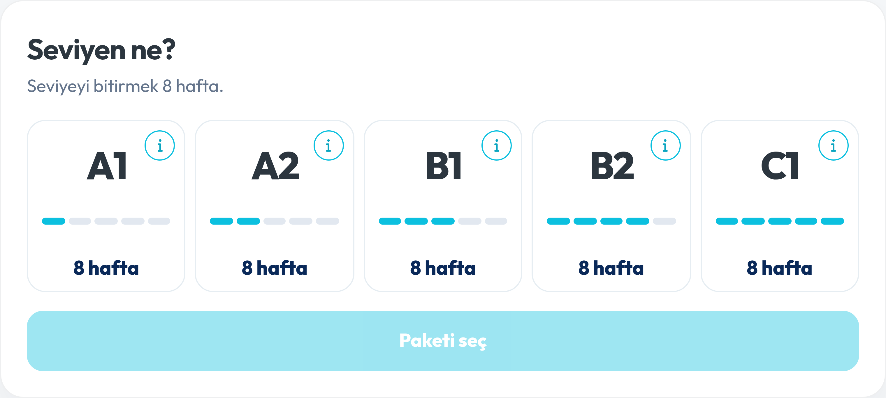
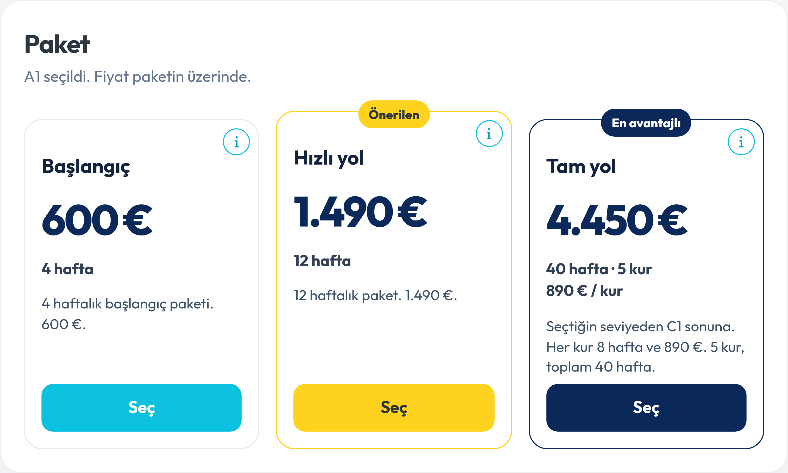
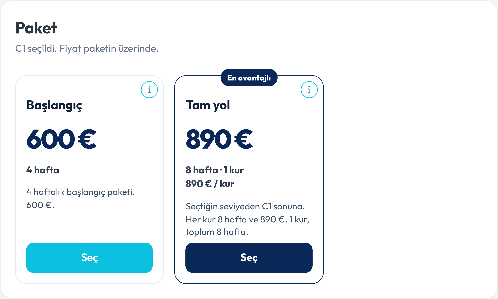
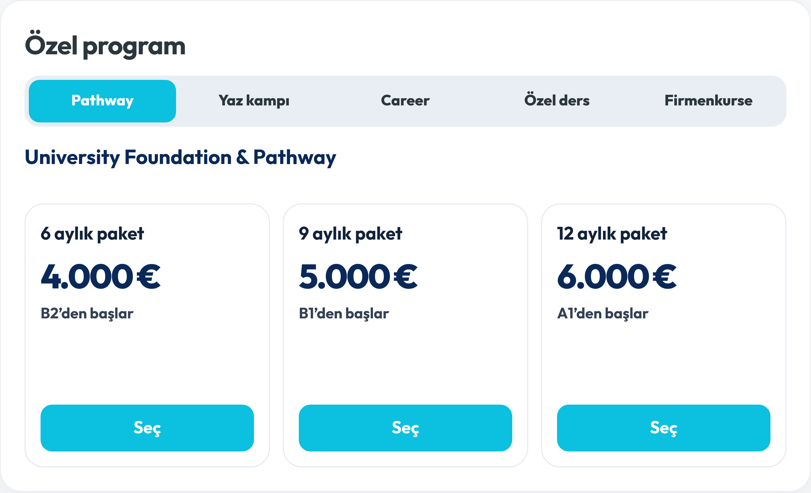
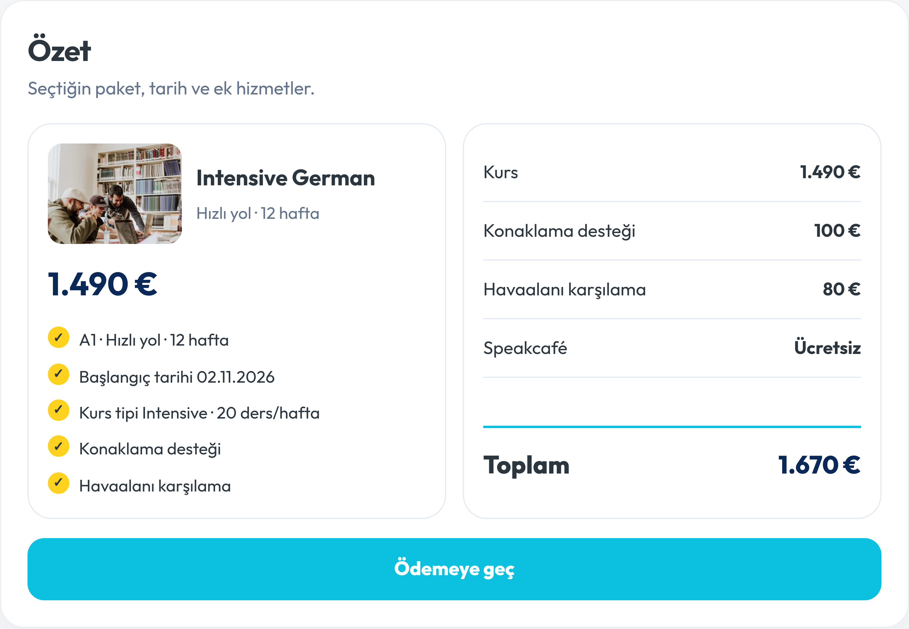
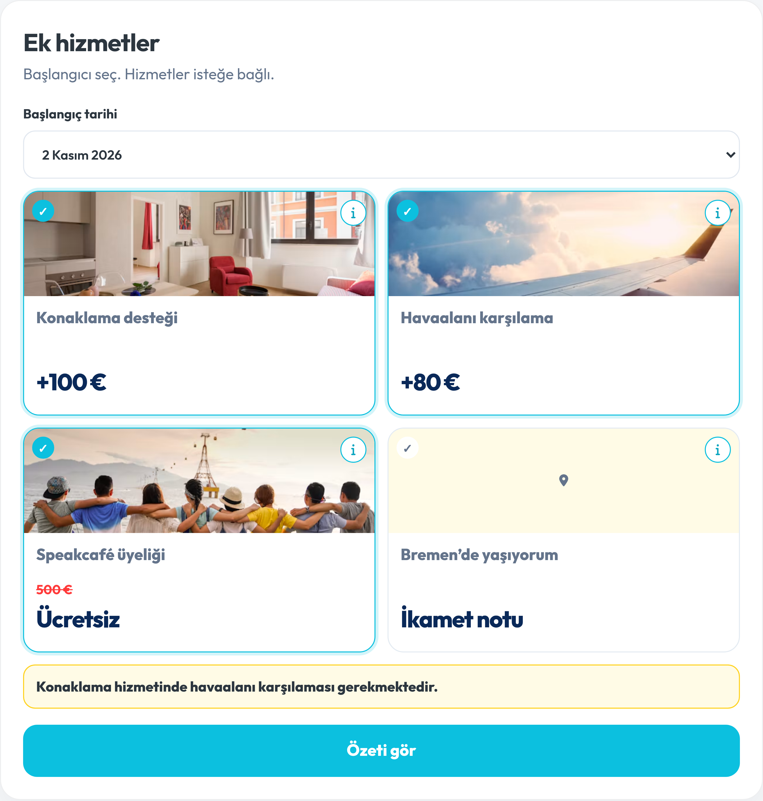
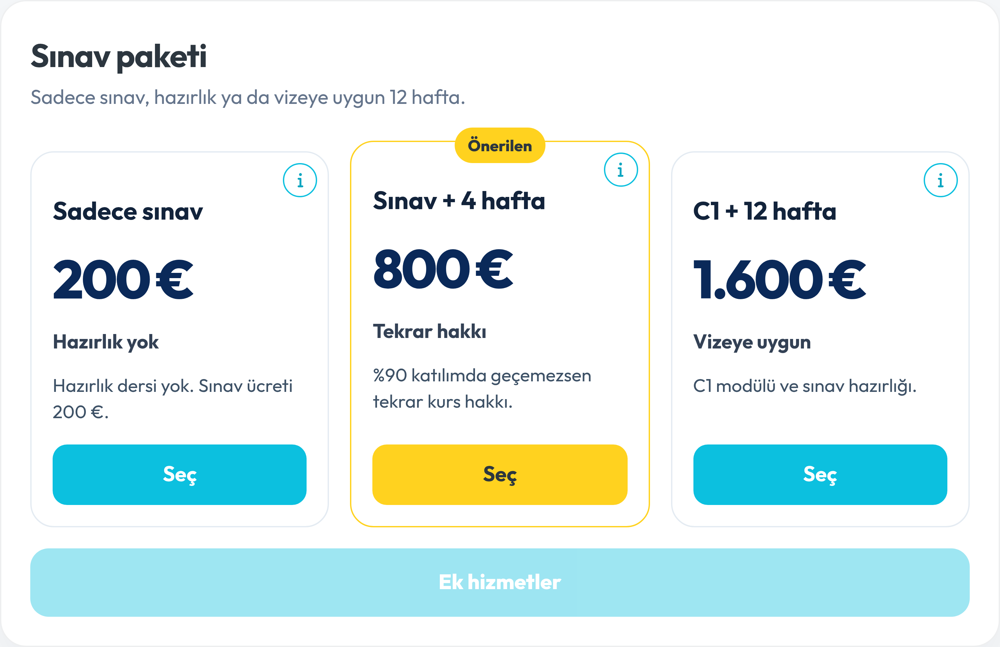

Yönetici notlarının forma karşılığı. Her görsel, değişecek ekranın şu anki hali. Form henüz bu notlara göre değiştirilmedi.
01
Kurs seçimi, seviye sorusu değil

Şu anki seviye adımı. Başlık “Seviyen ne?”, kartlarda yalnızca “8 hafta”.
İstenen
Müşteri buraya seviye sınavı gibi değil, kurs vitrini gibi girsin. Ana vurgu aylık fiyat olsun. “445 mi?” diye içeri girsin.
Ne yapılacak
Başlık: Hangi kursa katılmak istersin?
Hemen altında büyük rakam: aylık 445 €’dan. İngilizcede “from 445 € / month”.
Onun altında ince ve küçük punto: A1.1 + A1.2 = 8 hafta.
445 €, 8 haftalık kurun ayı. Kur 890 €, ay 4 hafta, 890 ÷ 2 = 445.
02
Paket adları satış cümlesi olsun, büyük rakam ay olsun

Şu anki A1 paket adımı. Büyük rakam toplam. Adlar: Başlangıç, Hızlı yol, Tam yol.
İstenen
Adlar kısa kalmış, satış odaklı değil. Fotoğraftaki kart başlıkları CTA olarak beğenildi. Kartta önce ay, altında toplam görünsün. Hangi kurların kapsandığı da yazılsın.
Ne yapılacak
Aylık flex paket — 4 hafta
Vize onay paketi — 12 hafta
Akademik C1 paketi — seçilen seviyeden C1’e, hafta sayısı seviyeye göre
Büyük punto aylık fiyat. Toplam, onun altında daha küçük.
Kur aralığı kartta: A1 flex için A1.1 – A1.2. Akademik pakette seçilen seviyeden C1.2’ye kadar.
03
12 hafta 1.500 € olsun, tasarruf rakamla yazılsın
Değişecek rakam ortadaki kartta: şu an 1.490 €.
İstenen
12 haftalık tutar üçe bölünsün. 500’den 1.500 €. Müşteri ne kadar kazandığını “300 € tasarruf” gibi net bir rakamla görsün.
Ne yapılacak
4 haftalık flex 600 € kalır. Üç flex ay 1.800 € eder. Vize onay paketi 1.500 € olunca fark 300 €.
A1’den tam yol: 40 hafta, 5 kur, toplam 4.450 €. Büyük rakam şu an toplam.

C1’de 12 haftalık kart yok. Tam yol 8 hafta, 890 €.
İstenen
Üçüncü kartın adı Akademik C1 paketi olsun. Kaç hafta olduğu yazılsın. Büyük rakam ay olsun. Hangi kurları kapsadığı A1.1 – A1.2 düzeninde yazılsın.
Ne yapılacak
Toplam aynı hesap: kur sayısı × 890 €. Ay her seviyede 445 €. Bir kur, iki alt kur: .1 ve .2.
Başlangıç
Kur aralığı
Süre
Ay
Toplam
A1
A1.1 – C1.2
40 hafta
445 €
4.450 €
A2
A2.1 – C1.2
32 hafta
445 €
3.560 €
B1
B1.1 – C1.2
24 hafta
445 €
2.670 €
B2
B2.1 – C1.2
16 hafta
445 €
1.780 €
C1
C1.1 – C1.2
8 hafta
445 €
890 €
C1’de vize onay kartı yine yok. Flex 600 € ve Akademik C1 890 € kalır. C1 kartında büyük rakam 445 €, altında toplam 890 € olur.
05
Seçenek değişince kutu boyu oynamasın

Sekme değişince içerik değişen ekran. Kart yüksekliğinin sabit kalması istenen yer.
İstenen
Seçenekler genişlerken kutunun boyu sürekli aynı kalsın. Sekme, paket veya ek satır değişince sayfa zıplamasın.
Ne yapılacak
Özel program kartları aynı sabit yükseklikte kalır. Pathway, kamp, career, ders ve Firmenkurse geçişinde kutu uzamaz.
Kurs paket kartları da aynı yüksekliğe kilitlenir. Metin uzasa da Seç düğmesi aynı hizada durur.
C1’de iki kart olduğunda kartın kendi boyu, üç kartlı A1 ekranındaki kartla aynı kalır.
06
Solda kurs, sağda ek hizmetler

Şu anki özet. Sol kurs, sağ tutarlar. Toplam 1.670 €, 12 haftalık paket hâlâ 1.490 € ile hesaplı.
İstenen
Bu sağ-sol düzen kalsın. Sol kurs detayı, sağ ek hizmetler. İki kutunun boyu aynı ve sabit olsun.
Ne yapılacak
Sol sütun: kurs görseli, paket adı, aylık fiyat, toplam, tarih ve kur aralığı.
Sağ sütun: seçilen ek hizmetler ve toplam.
İki kutu eşit yükseklikte kilitlenir.
12 hafta 1.500 € olunca bu örnekteki kurs satırı 1.500 €, konaklama ve vize kalemleriyle birlikte yeniden toplanır.
07
Ek hizmetler yeniden kurulacak

Şu anki ek hizmetler. Bremen kartı, havaalanı +80 € ve “konaklamada havaalanı gerekir” uyarısı burada.
İstenen
Ekranın kendisi iyi bulunmuş. Bremen ikameti kalksın. Havaalanı kartının yerini vize kaydı ve onboarding alsın. Sprachcafé’nin adı satış cümlesi olsun.
Ne yapılacak
Bremen’de yaşıyorum kartı kalkar.
Speakcafé satırı: Free Weekly 3 hours Sprachcafé. Ücretsiz kalır.
Vize garantili kayıt, +80 €. Bilgi: vize reddinde tam iade ve bir kez ücretsiz vize gecikmesi ötelemesi. Bu seçilince onboarding kendiliğinden seçilir. Bilgi: vizeli başvuruda iki hizmet birlikte zorunlu.
Onboarding Service yeni kart. Bilgide hizmetin içindekiler. Fiyat mesajda yok; yazılmadan önce netleşecek.
Accommodation Service kalır. Bilgide konaklama tiplerinin kısa fiyatları. Tip fiyatları da ayrıca verilecek; formda şu an yalnızca +100 € var.
Havaalanı karşılama kartı bu listede yok. +80 €, vize garantili kayda geçer. “Konaklamada havaalanı gerekir” uyarısı kalkar.
Başlangıç tarihi kalır. Kayıt belgesi için gerekli. Bilgisinde: vize başvurularında nihai kurs başlangıcını, randevu belli olunca kurs tarafı belirleyebilir.
08
Dil belgesi sorusu bu ekrana eklenecek
Soru bu adımda, başlangıç tarihinin yanında duracak. Şu an formda böyle bir alan yok.
İstenen
“Dil belgeniz var mı?” sorulsun. Varsa, gireceği kursun bir alt sınavları görünsün. Kurs tipi şimdilik sabit yazı olsun, ileride seçenek eklenebilsin.
Ne yapılacak
Soru: dil belgeniz var mı?
Varsa, B1 kursu için: Telc A2, Goethe A2, ÖSD A2, Other, I want to take Campus German Exam.
Liste, seçilen seviyeye göre o seviyenin bir alt sınavlarını gösterir.
Altında sabit satır: Your course: Intensive German 20h/week. Şimdilik seçilemez.
09
Sınav paketlerinin adı hazırlık ve sınav desin

Şu anki sınav paketleri. Orta ve sağ kartın adı değişecek.
İstenen
Adlar süre gibi kırpılmış. Satış cümlesi olsun. “C1 + 12 hafta” değil. “Sınav + 4 hafta” değil. Metinler, sınavın sağladığı avantajı anlatsın.
Ne yapılacak
Ortadaki kart: Hazırlık Kursu + Sınav.
Sağdaki kart: C1 + Sınav Hazırlık + Sınav. Anlamı: toplam 12 hafta kurs + sınav.